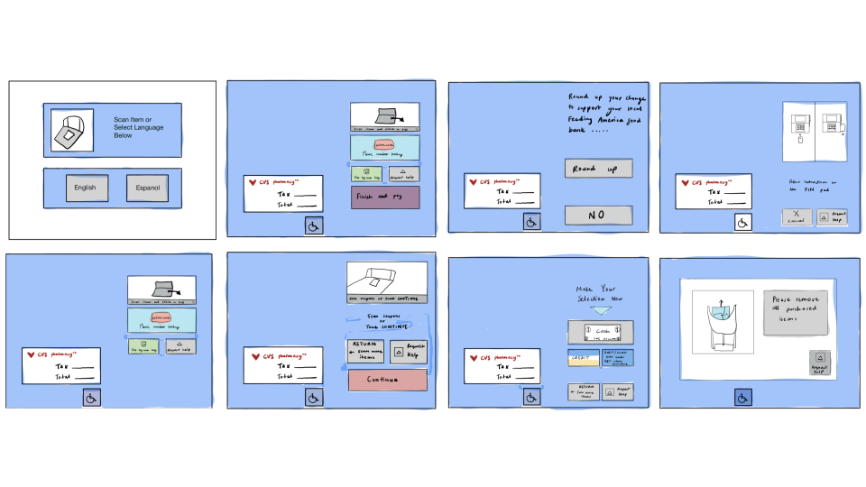
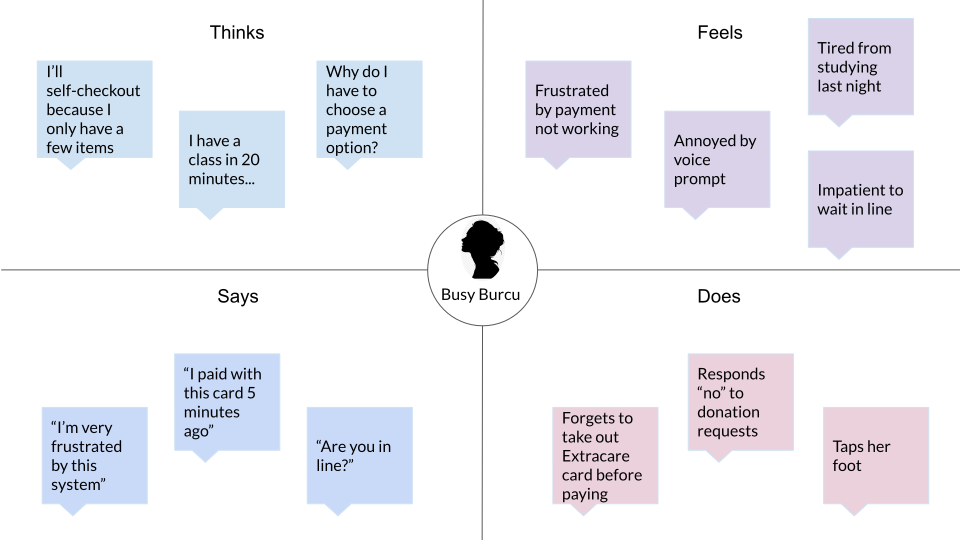

Let’s face it - we all hate long lines. Whether you have a million things to do or are on vacation,
nobody wants to wait twenty minutes to buy a bottle of shampoo. This is how self checkout systems gained
momentum in recent years. Self checkout allow customers to quickly scan and purchase their items instead
of paying at a traditional staffed counter. Retailers, such as CVS, have implemented self checkout counters
across their many locations in order to increase checkout efficiency. But the question is, do self-checkout
counters actually improve customers’ shopping experience?
Let’s find out...
the interface
Before we talk about user interactions with the interface, let's look at what the interface looks like. Here are
some sketches:

observations + interviews
For my research, I observed three users use CVS’s self checkout system and then interviewed them about their
experience.
When I made these observations, the CVS was relatively empty and there was no line for the self checkout or the
staffed
checkout. The following is a summary of my observations about the users’ actions and any struggles or difficulties
that they encountered:
One user pressed on all of the buttons without hesitation, before the voice prompt would finish its sentence.
One user waited until after the voice prompts to perform an action.
One user had to insert her credit card three times until the payment worked. The user mentioned that she was
frustrated by this.
One user was confused by where the bagging area was when the voice prompted him to place his items in the
bagging area.
While paying, users are prompted by a big block of text asking if they would like to round up their change to
support a food bank.
All of the users I observed quickly clicked “no”.
After observing the users, I interviewed them about their experience. Here are a sample of questions from the
interview:
Do you have a preference between self-checkout counters or staffed checkout counters?
Do you think the number of items you purchase impact your decision on whether to self checkout?
What was your first reaction to the self-checkout interface?
Were you able to self-checkout in your first language today?
Have you encountered a technical glitch with this interface before? If so, do you remember what it was?
Did you find the text on the screen easy to read?
On a scale of 1-5, how helpful did you find the voice prompt with 1 being not helpful at all and 5 being
very helpful.
On a scale of 1-5, how annoying did you find the voice prompt with 1 being very annoying and 5 being not
annoying at all.
On a scale of 1-5, how would you rate your experience with the machine with 1 being very bad and 5 being
very good?
Would you use the self-checkout counter again?
interview takeaways
olivia
Prefers self checkout over staffed checkout
First reaction to the interface was "impressed"
Doesn't like the fact that you have to specify your payment method before paying
Found the voice prompt helpful and overall had a good experience with the machine
mark
Prefers staffed counters but would consider using self checkout when buying only a few items
Doesn't like that you have to answer many questions
Described the interface as "all over the place" and thought there was too much text and too many colors
Encountered a technical glitch in the past and had a difficult time finding bagging area when I observed him
burcu
Prefers staffed counters when buying many items but prefers self checkout when not feeling social or if in a
hurry
First reaction to the interface was "wow we don't have this in Turkey". Second reaction was "annoyed by how
difficult it is to pay"
Didn't find the voice prompt helpful and also found it annoying
Felt annoyed when she finished paying and had an okay experience overall
personas
Busy Burcu
Busy Burcu is a graduate student with a part-time job. She goes on a run every morning, works during the day, and
studies in the evenings.
She ran out of shampoo and conditioner and decided to quickly go to a CVS near her apartment.
At the self checkout counter, Busy Burcu is having a difficult time paying - the payment only went through on her
third try.

Stressed Steven
Stressed Steven is a Junior at college. He is stressed because he has 2 midterms this week and 3 job interviews.
He has a headache and decided to quickly stop at CVS to buy advil. He still has so much to do and is not
in the mood for social interactions. At the self checkout counter, Stressed Steven doesn't understand where the
bagging
area is and finds the voice prompt unhelpful.